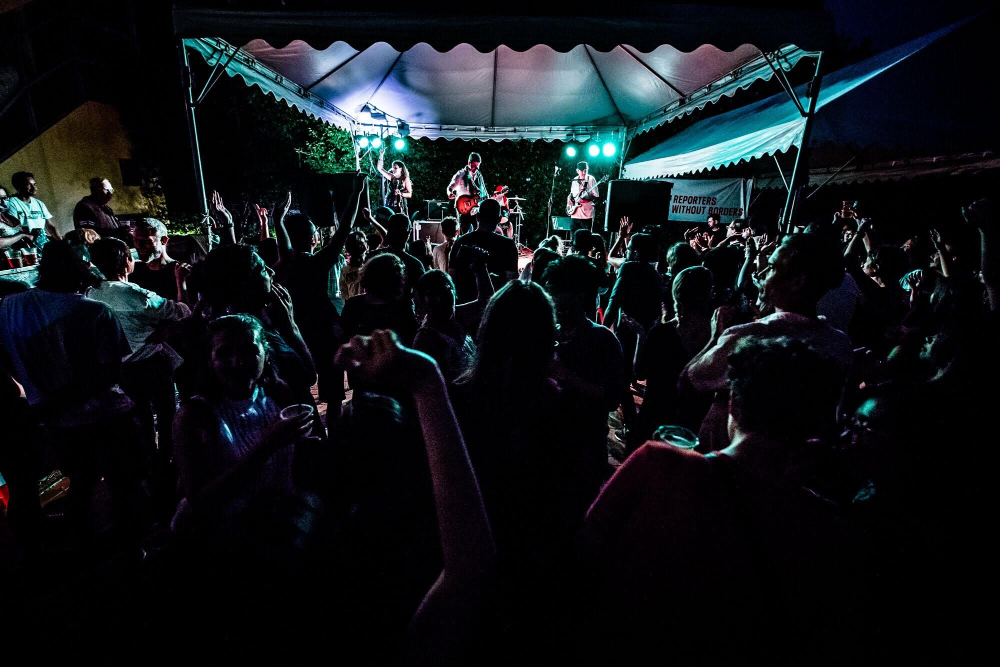
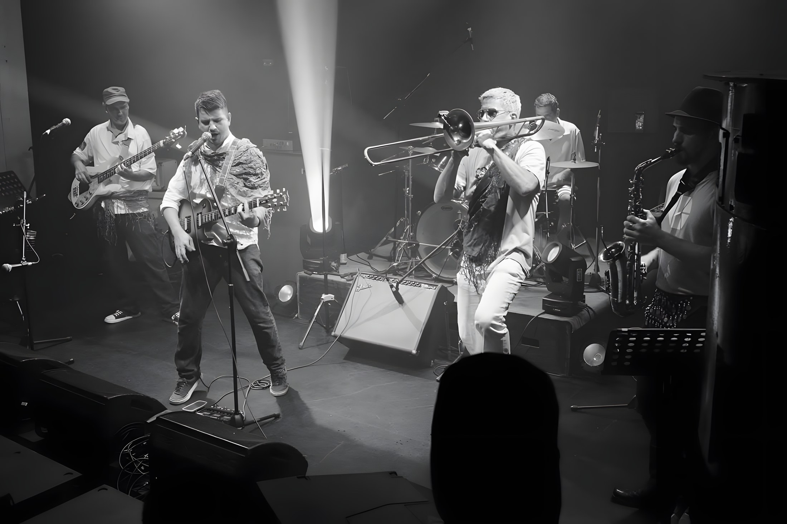

首頁音樂祭
樂團現場紀錄
音樂祭與文化活動。
我們在台灣參與過的音樂祭、城市慶典與文化活動。每個活動都附有年份、活動資訊或新聞報導，還有我們保留下來的演出照片和影片。
過往與近期活動
演出過的地方。
以活動為單位整理；點進去後可以分年份看演出紀錄。

2017、2019、2020
Urban Nomad 怪奇音樂祭
2017、2019、2020 年，三屆有活動名單與報導可查。
查看年份、照片與報導 →
2018
Taiwan Ska Fest 台灣 Ska 音樂祭
Balkazar 曾在 PIPE Live House 的 Taiwan Ska Fest 演出，Skaraoke 也有參加；我們保留了當晚的完整演出影片。
查看年份、照片與報導 →
2018
丹尼一日音樂節
Balkazar 登上台北第 17 屆丹尼一日音樂節主舞台。
查看年份、照片與報導 →
2018
虎山音樂祭 Tiger Mountain Ramble
Balkazar 在台北虎山戶外音樂祭演出。
查看年份、照片與報導 →
2019
士林官邸菊展
Balkazar 受邀於台北市政府文化活動帶來巴爾幹音樂演出。
查看年份、照片與報導 →
2021、2023
台北素食生活節 Taipei Veggie Fest
Balkazar 在微遠虎山參與 2021 與 2023 年兩屆素食生活節，並登上主舞台。
查看年份、照片與報導 →
2019、2022、2026
Celebration Canada 加拿大日
Balkazar 多次參與台北加拿大日活動，保有演出照片與不同年份的紀錄。
查看年份、照片與報導 →
2025、2026
歐洲聖誕市集
Balkazar 多次受邀到台北歐洲聖誕市集演出。
查看年份、照片與報導 →特別合作
與其他音樂人合作。
Fermín Muguruza（Kortatu）與 Skaraoke
2019 年在台北 Triangle，Balkazar 為 Fermín Muguruza 的現場演出擔任伴奏樂團。有時音樂祭結束後，我們還會和 Skaraoke 一起即興 jam。
閱讀合作紀錄 ↗音樂祭以外
酒吧與節慶演出。
除了音樂祭，我們還在台北不少酒吧、Live House、聖誕市集以及高雄旗津跨年舞台演出過。看看其他演出場地 ↗